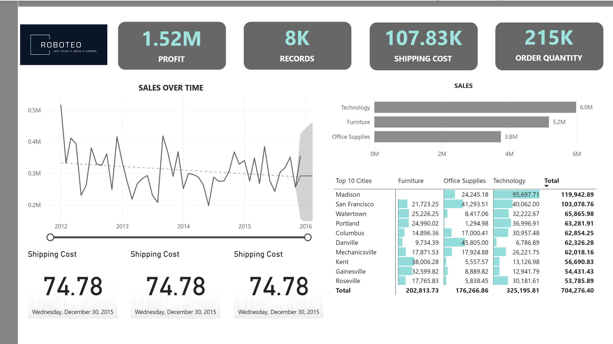
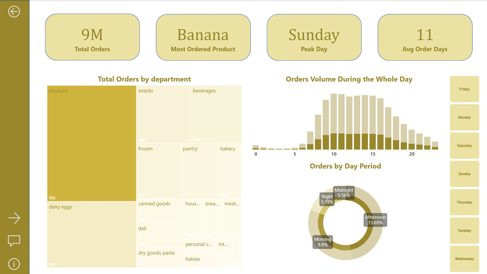

Business Intelligence
This page is dedicated to dashboards, reporting projects, BI case studies, and data storytelling.
Sales Performance Dashboard
I designed this dashboard to quickly understand overall business performance and key drivers. I highlighted core KPIs like profit, records, shipping cost, and order quantity for a clear snapshot. Then, I analyzed sales trends over time and broke them down by category and city to identify top performers. I also included shipping cost metrics to monitor operational efficiency.

Retail Company Key Metrics and Overview Dashboard
This dashboard provides an overview of customer purchasing behavior and product performance in an online retail environment. It highlights key metrics such as total orders, the most popular product, peak shopping day, and average time between orders. The visuals explore how demand varies across product categories, time of day, and day periods, revealing patterns in customer activity. Overall, the dashboard helps identify when customers shop, what they buy most, and which categories drive the highest order volume.

Dashboard Design Principles
You can also include a section showing how you think about BI work: audience, metric definition, drill-down paths, and visual clarity.
Tools & Methods
Power BI, SQL, Excel, DAX, data modeling, ETL preparation, KPI design, stakeholder reporting, and visual storytelling.